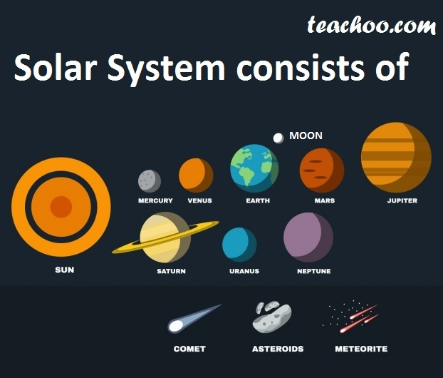
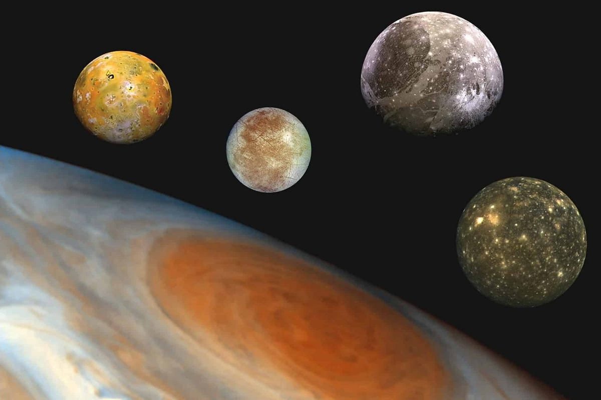

El Sistema Solar

1. Información general
El sistema solar es el sistema planetario que liga gravitacionalmente a un conjunto de objetos astronómicos que giran directa o indirectamente en una órbita alrededor de una única estrella conocida con el nombre de Sol.

La estrella concentra el 99,86% de la masa del sistema solar, y la mayor parte de la masa restante se concentra en ocho planetas cuyas órbitas son prácticamente circulares y transitan dentro de un disco casi llano llamado plano eclíptico.
Los cuatro planetas más cercanos, considerablemente más pequeños, Mercurio, Venus, Tierra y Marte, también conocidos como los planetas terrestres, están compuestos principalmente por roca y metal.
Mientras que los cuatro más alejados, denominados gigantes gaseosos o «planetas jovianos», más masivos que los terrestres, están compuestos de hielo y gases. Los dos más grandes, Júpiter y Saturno, están compuestos principalmente de helio e hidrógeno. Urano y Neptuno, denominados gigantes helados, están formados mayoritariamente por agua congelada, amoniaco y metano.

El Sol es el único cuerpo celeste del sistema solar que emite luz propia, debido a la fusión termonuclear del hidrógeno y su transformación en helio en su núcleo. El sistema solar se formó hace unos 4600 millones de años a partir del colapso de una nube molecular. El material residual originó un disco circunestelar protoplanetario en el que ocurrieron los procesos físicos que llevaron a la formación de los planetas. El sistema solar se ubica en la actualidad en la nube Interestelar Local que se halla en la Burbuja Local del brazo de Orión, de la galaxia espiral Vía Láctea, a unos 28.000 años luz del centro de esta.
2. Cuerpos del sistema solar
Según sus características, los cuerpos que forman parte del sistema solar se clasifican como sigue:
-
El Sol, una estrella de tipo espectral G2 que contiene más del 99,86% de la masa del sistema. Con un diámetro de 1.400.000km, se compone de un 75% de hidrógeno, un 20% de helio y 5% de oxígeno, carbono, hierro y otros elementos.
- Los planetas, divididos en planetas interiores (también llamados terrestres o telúricos) y planetas exteriores o gigantes. Entre estos últimos, Júpiter y Saturno se denominan gigantes gaseosos, mientras que Urano y Neptuno suelen nombrarse gigantes helados. Todos los planetas gigantes tienen a su alrededor anillos.
-
Los planetas enanos son cuerpos cuya masa les permite tener forma esférica, pero no es la suficiente como para haber atraído o expulsado a todos los cuerpos a su alrededor. Son: Plutón (hasta 2006 era considerado el noveno planeta del sistema solar), Ceres, Makemake, Eris y Haumea.
- Los satélites son cuerpos mayores que orbitan los planetas; algunos son de gran tamaño, como la Luna, en la Tierra; Ganímedes, en Júpiter, o Titán, en Saturno.
- Los cuerpos menores constituyen el resto de objetos celestes y según la definición de la UAI se subdividen en:
- Los asteroides son cuerpos menores concentrados mayoritariamente en el cinturón de asteroides entre las órbitas de Marte y Júpiter. Su tamaño varia entre los 50 m hasta los 1.000km de diámetro.
- Los objetos transneptunianos son objetos helados de órbitas estables pertenecientes a la zona exterior del sistema solar. Se ubican en regiones como el cinturón de Kuiper, el disco disperso y la nube de Oort.
- Los cometas son objetos helados pequeños conformados por hielo, polvo y rocas. Generalmente poseen órbitas muy excéntricas. Tienen su origen en el cinturón de Kuiper y la nube de Oort.
- Los meteoroides son objetos menores de 50m de diámetro, pero mayores que las partículas de polvo cósmico. Suelen ser fragmentos de cometas, asteroides y objetos más grandes.
3. Formación y evolución
El sistema solar se formó hace 4568 millones de años por el colapso gravitatorio de una parte de una nube molecular gigante. Esta nube primigenia tenía varios años luz de diámetro y probablemente dio a luz a varias estrellas. Como es normal en las nubes moleculares, consistía principalmente de hidrógeno, algo de helio y pequeñas cantidades de elementos pesados surgidos de previas generaciones estelares.
A medida que la región —conocida como nebulosa protosolar— se convertía en el sistema solar, colapsaba y la conservación del momento angular hizo que rotase más deprisa. El centro, donde se acumuló la mayor parte de la masa, se volvió cada vez más caliente que el disco circundante.

A medida que la nebulosa en contracción rotaba más deprisa, comenzó a aplanarse en un disco protoplanetario con un diámetro de alrededor de 200UA y una densa y caliente protoestrella en el centro.
Los planetas se formaron por acreción a partir de este disco en el que el gas y el polvo atraídos gravitatoriamente entre sí se unen para formar cuerpos cada vez más grandes. En este escenario, cientos de protoplanetas podrían haber surgido en el temprano sistema solar que acabaron fusionándose o fueron destruidos dejando los planetas, los planetas enanos y el resto de cuerpos menores.